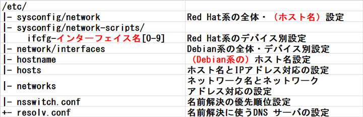
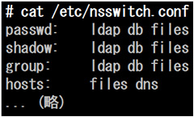
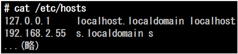
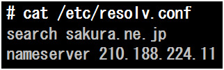

- 問題ID : 22050 ネットワークの問題解決
- 履歴
考えられるこの問題の原因として、最も適切なものはどれか、選びなさい。
正解
自ホストが利用する DNS の設定が適切に行われていない
解説
IP アドレスで指定を行えば通信はできるのですから、ネットワーク自体は正常に接続できているとわかります。
ではなぜドメイン名を使ってアクセスができないのかと考えると、ドメイン名から IP アドレスへの変換（名前解決）に失敗しているのではないかという可能性が浮かんできます。
ドメイン名の名前解決は /etc/hosts での手動設定を除いては、DNS を利用して行われます。したがって、この DNS に関する設定がおかしいのではないかというのが最もあり得そうです。
以上から
・自ホストが利用する DNS の設定が適切に行われていない
となり、これが正解です。
このような状況では必ず DNS の設定が原因だとまでは言い切れませんが、選択肢のうちでは「最も適切」です。
DNS の設定に関する設定ファイルは、/etc/resolv.conf や /etc/nsswitch.conf が該当します。
/etc/resolv.conf は利用する DNSサーバを指定するファイルで、/etc/nsswitch.conf は名前解決に DNS を利用するかどうかといった設定を行うファイルです。
これらの記述が間違っていたり、現在のネットワーク構成に合っていないと、この問題のような状況になる可能性があります。
その他の選択肢についても見ておきます。
・自ホストから外部へ接続するためのデフォルトゲートウェイが設定されていない
デフォルトゲートウェイとは、自ホストが LAN 外のリモートホストにアクセスする際の、はじめの中継地点となるホストのことです。
この設定が適切に行われていないと、外部のホストに対する接続が失敗してしまいます。
しかしこの問題の状況では、「IP アドレスを使って指定すると通信を行うことができる」とあります。
デフォルトゲートウェイの問題であれば、ドメイン名で指定するか IP アドレスで指定するかによらず通信も失敗するはずですので、ここでは誤りです。
・自ホストにホスト名とドメイン名が設定されていない
自ホストにホスト名やドメイン名が設定されていなくても、hostsやDNSが適切に設定されていれば、ドメイン名を使って外部サーバにアクセスできます。
・自ホストのネットワークインタフェースが無効になっている
「IP アドレスを使って指定すると通信を行うことができる」とありますので、ネットワークインタフェースは有効になっているはずで、この選択肢は誤りです。
トラブルシュートの問題では、コマンド・ファイル等がどのような役割を持っているかをしっかり理解しているかどうかが問われます。
各コマンド・ファイルの動作・役割について自分で説明できるくらいに理解しておけば、応用問題に対してもその場で考えることで答えが導き出せるはずです。
参考
【ネットワーク関連設定】
ネットワーク関連の設定を行うファイルには次のようなものがあります。
ただし、これらのディレクトリやファイルの一部は、最新のディストリビューションでは、使われていないものなどもあります。
Red
HatであればEnterpriseLinux6以前、Debianであれば7以前のバージョンであれば、ほぼこの構成を使った設定となります。ただし、
NetworkManagerがインストールされた環境もしくは、systemdおよびNetworkManagerが標準となった最近のバージョンで
は、必ずしも項の構成の設定が有効にならない場合があります。201試験の項目において、構成の変更点として関係のある可能性がある項目は、図中（ ）や
赤字で修正を行っています。
Red
Hat系のhostnameの設定方法・設定ファイルが「/etc/hostname」に変わったり、インターフェイスの命名規則が変わったためファイル
名が変わったり、もしくは、NetworkManagerが設定を自動的に検知せず、設定が反映されたり有効になったりするタイミングや条件が違うなど、
細かな違いがあるので同様に注意しましょう。

ディストリビューションが Red Hat 系か Debian 系かによって全体設定・デバイス別設定や、ホスト名を定義するファイルが異なっている点に注意しましょう（表の上４つ）。
名前解決に関係した設定ファイル（表の下４つ）については、どのディストリビューションでも共通して使えるものと思っていいでしょう。
これらファイルは名前が似ているものも多く混乱しがちですので、まずは各ファイルの書式など細かい点よりも、これらの役割の違いをよく理解することが重要です。
ネットワークに関連したトラブルシュートの問題などで、これらのうちどのファイルが該当する設定を行うファイルかといった知識が必要となることが予想されます。
【名前解決の順序】
名前解決とは、ホスト名をIPアドレスに結び付けたり、ユーザー名をユーザーIDを結び付けたりするなど、何らかの名前を、サービスで一意のID等に解決することですが、ここでは、ネットワーク関連の名前解決に関して記載します。
上
図のネットワーク関連設定ファイルのうち、上図の上４つが、ディストリビューションによる違いや、全体、ホスト名、デバイス名、といった役割の違いによっ
て、別々の機能を担っていることが多いのに対し、下の４つは、いずれもアドレスと名前を紐づける役割の一部を担っています。そして、よく見ると、重複した
機能もあることがわかります。
例えば、/etc/hostsはホスト名とIPアドレスを紐づけしますし、DNSもドメイン名（ホスト名）をIPアドレスに紐づけています。
もし、２つのファイルで紐づけが違っていたら、どうなるのでしょう？
以
下は、下４つのファイルのうち、多くのディストリビューションでは標準では持っていない /etc/networks
を除いた３つのファイル（/etc/hosts、/etc/nsswitch.conf、/etc/resolv.conf）の関係について、説明しま
す。
・/etc/nsswitch.conf
名前解決関連のファイルで最初に参照されるのは「/etc/nsswitch.conf」です。
ここで「/etc/hosts」を参照するか、DNSを参照するかの優先順位付けを行います。
以下は、/etc/nsswitch.confの例です。

「passwd:」「group:」などとあることからもわかる通り、この /etc/nsswitch.conf は実際にはホスト名の解決方法以外にもユーザ名やプロトコル名など、様々な情報を検索する優先順位を設定しているファイルです。
nsswitch という名前は Name Service SWITCH の略であるという由来と共に覚えておくと忘れにくいかと思います。
「hosts:」とある行がホスト名の名前解決の設定です。
この例では「files dns」と設定されています。これはまずローカルファイル (/etc/hosts など) による解決を試み、それに失敗した場合はDNSを使って問い合わせを行うという設定です。
このように、左に指定したものほど優先順位が高くなります。
優先順位が高い解決方法で解決できない場合のみ、その次の方法で解決を試みます。
また、もし /etc/hosts による名前解決と DNS による名前解決が違っていても、例えば上記の場合は files が先ですから、/etc/hosts での名前解決が優先されます。
以上に述べたように、/etc/hosts が先に参照されるか、DNSが先に参照されるかは、/etc/nsswitch.conf の設定によることになります。
・/etc/hosts
例
えば１文字のホスト名[s]がサーバのIPアドレス「192.168.2.55」を指すように設定できれば、コマンドの引数や Web
ブラウザのアドレスバーなどにサーバのアドレスを入力する際に便利です。（実際には、勝手にホスト名をつけてアクセスするために弊害があることもありま
す）
ネットワーク内全体でそのような新しいホスト名を利用可能にするには DNS の設定を行う必要がありますが、自分が使うクライアントマシン上でのみ有効なように設定を行うだけならば、設定ファイルにホスト名とIPアドレスの対応を書くだけでこのようなことが可能です。
/etc/hosts にはデフォルトでは自分自身を指すホスト名「localhost」などが定義されているだけですが、この設定を活用すれば、小さなネットワークであれば DNS を使わずにホスト名で相互にアクセスできる環境を作ることも可能です。
/etc/hosts は実際には以下のような内容です。１行ごとに IP アドレスとホスト名の対応が書かれているのが読み取れるかと思います。

・/etc/resolv.conf
通常各クライアントは直接問い合わせる先となる DNS サーバのアドレスを知っている必要があります（システム内部の話です。ユーザとしては DHCP を利用している場合など、DNS サーバの設定を気にすることは無いかもしれません）。
DNS サーバ設定を行うファイルが /etc/resolv.conf です。
このファイル内の nameserver という項目に、問い合わせ先となる DNS サーバを指定します。
以下は/etc/resolv.confの例です。

なお DNS サーバを指定する項目である nameserver の他にも search, domain といった指定で始まる行を書くこともできますが、ここでは試験範囲外のため、割愛します。